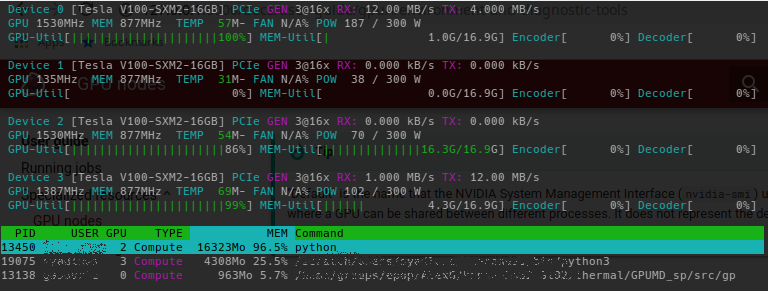

GPU nodes
To support the latest computing evolutions in many fields of science, Sherlock provides GPU nodes that can be used to run a variety of GPU-accelerated applications. Those nodes are available to everyone, but are a scarce, highly-demanded resource, so getting access to them may require some wait time in queue.
Getting your own GPU nodes
If you need frequent access to GPU nodes, we recommend considering becoming an owner on Sherlock, so you can have immediate access to your GPU nodes when you need them.
GPU nodes#
A limited number of GPU nodes are available in the gpu partition. Anybody
running on Sherlock can submit a job there. As owners contribute to expand
Sherlock, more GPU nodes are added to the owners partition, for use by PI
groups which purchased their own compute nodes.
More GPU types to come
As we merge cluster nodes during Phase 2, the existing Sherlock 1.0 GPU
nodes will be added to the gpu partition on Sherlock 2.0
There currently are two types of GPUs available in the gpu partition:
- NVIDIA Tesla P100-PCIe1, for applications requiring double-precision (64-bit) and deep-learning training workloads,
- NVIDIA Tesla P402, for single- or half-precision (32, 16-bit) workloads and deep-learning inference jobs.
Submitting a GPU job#
To submit a GPU job, you'll need to use the --gres option in your batch script
or command line submission options.
For instance, the following script will request one GPU for two hours in the
gpu partition, and run the GPU-enabled version of gromacs:
#!/bin/bash #SBATCH -p gpu #SBATCH -c 10 #SBATCH --gres gpu:1 ml load gromacs/2016.3 srun gmx_gpu ...
You can also directly run GPU processes on compute nodes with srun. For
instance, the following command will display details about the GPUs allocated
to your job:
$ srun -p gpu --gres gpu:2 nvidia-smi Fri Jul 28 12:41:49 2017 +-----------------------------------------------------------------------------+ | NVIDIA-SMI 375.51 Driver Version: 375.51 | |-------------------------------+----------------------+----------------------+ | GPU Name Persistence-M| Bus-Id Disp.A | Volatile Uncorr. ECC | | Fan Temp Perf Pwr:Usage/Cap| Memory-Usage | GPU-Util Compute M. | |===============================+======================+======================| | 0 Tesla P40 On | 0000:03:00.0 Off | 0 | | N/A 26C P8 10W / 250W | 0MiB / 22912MiB | 0% E. Process | +-------------------------------+----------------------+----------------------+ | 1 Tesla P40 On | 0000:04:00.0 Off | 0 | | N/A 24C P8 10W / 250W | 0MiB / 22912MiB | 0% E. Process | +-------------------------------+----------------------+----------------------+ +-----------------------------------------------------------------------------+ | Processes: GPU Memory | | GPU PID Type Process name Usage | |=============================================================================| | No running processes found | +-----------------------------------------------------------------------------+
GPU resources MUST be requested explicitly
Jobs will be rejected at submission time if they don't explictly request GPU resources.
The gpu partition only accepts jobs explicitly requesting GPU resources. If
they don't, they will be rejected with the following message:
$ srun -p gpu --pty bash srun: error: Unable to allocate resources: Job violates accounting/QOS policy (job submit limit, user's size and/or time limits)
Interactive session#
As for any other compute node, you can submit an interactive job and request a shell on a GPU node with the following command:
$ srun -p gpu --gres gpu:1 --pty bash srun: job 38068928 queued and waiting for resources srun: job 38068928 has been allocated resources $ nvidia-smi --query-gpu=index,name --format=csv,noheader 0, Tesla V100-SXM2-16GB
GPU types#
Since Sherlock features many different types of GPUs, each with its own technical characteristics, performance profiles and specificities, you may want to ensure that your job runs on a specific type of GPU.
To that end, Slurm allows users to specify constraints when submitting jobs, which will indicate the scheduler that only nodes having features matching the job constraints could be used to satisfy the request. Multiple constraints may be specified and combined with various operators (please refer to the official Slurm documentation for details).
The list of available features on GPU nodes can be obtained with the
node_feat3 command:
$ node_feat -p gpu | grep GPU_ GPU_BRD:TESLA GPU_GEN:PSC GPU_MEM:16GB GPU_MEM:24GB GPU_SKU:TESLA_P100_PCIE GPU_SKU:TESLA_P40
node_feat will only list the features of nodes from partitions you have
access to, so output may vary depending on your group membership.
The different characteristics4 of various GPU types are listed in the following table
| Slurm feature | Description | Possible values | Example job constraint |
|---|---|---|---|
GPU_BRD |
GPU brand | GEFORCE: GeForce / TITANTESLA: Tesla |
#SBATCH -C GPU_BRD:TESLA |
GPU_GEN |
GPU generation | PSC: PascalMXW: Maxwell |
#SBATCH -C GPU_GEN:PSC |
GPU_MEM |
Amount of GPU memory | 16GB, 24GB |
#SBATCH -C GPU_MEM:16GB |
GPU_SKU |
GPU model | TESLA_P100_PCIETESLA_P40 |
#SBATCH -C GPU_SKU:TESLA_P40 |
Depending on the partitions you have access to, more features may be available to be requested in your jobs.
For instance, to request a Tesla GPU for you job, you can use the following submisison options:
$ srun -p owners --gres gpu:1 -C GPU_BRD:TESLA nvidia-smi -L GPU 0: Tesla P100-SXM2-16GB (UUID: GPU-4f91f58f-f3ea-d414-d4ce-faf587c5c4d4)
Unsatisfiable contraints
If you specify a constraint that can't be satisfied in the partition you're
submitting your job to, the job will be rejected by the scheduler. For
instance, requesting a GeForce GPU in the gpu partition, which only
features Tesla GPUs, will result in an error:
$ srun -p gpu --gres gpu:1 -C GPU_BRD:GEFORCE nvidia-smi -L srun: error: Unable to allocate resources: Requested node configuration is not available
GPU compute modes#
By default, GPUs on Sherlock are set in the Exclusive Process compute mode5, to provide the best performance and an isolated environment for jobs, out of the box.
Some software may require GPUs to be set to a different compute mode, for instance to share a GPU across different processes within the same application.
To handle that case, we developed a specific option, --gpu_cmode, that users
can add to their srun and sbatch submission options, to choose the compute
mode for the GPUs allocated to their job.
Here's the list of the different compute modes supported on Sherlock's GPUs:
| GPU compute mode | --gpu_cmode option |
Description |
|---|---|---|
| "Default" | shared |
Multiple contexts are allowed per device (NVIDIA default) |
| "Exclusive Process" | exclusive |
Only one context is allowed per device, usable from multiple threads at a time (Sherlock default) |
| "Prohibited" | prohibited |
No CUDA context can be created on the device |
By default, or if the --gpu_cmode option is not specified, GPUs will be set
in the "Exclusive Process" mode, as demonstrated by this example command:
$ srun -p gpu --gres gpu:1 nvidia-smi +-----------------------------------------------------------------------------+ | NVIDIA-SMI 387.26 Driver Version: 387.26 | |-------------------------------+----------------------+----------------------+ | GPU Name Persistence-M| Bus-Id Disp.A | Volatile Uncorr. ECC | | Fan Temp Perf Pwr:Usage/Cap| Memory-Usage | GPU-Util Compute M. | |===============================+======================+======================| | 0 Tesla P40 On | 00000000:03:00.0 Off | 0 | | N/A 22C P8 10W / 250W | 0MiB / 22912MiB | 0% E. Process | +-------------------------------+----------------------+----------------------+
With the --gpu_cmode option, the scheduler will set the GPU compute mode to
the desired value before execution:
$ srun -p gpu --gres gpu:1 --gpu_cmode=shared nvidia-smi +-----------------------------------------------------------------------------+ | NVIDIA-SMI 387.26 Driver Version: 387.26 | |-------------------------------+----------------------+----------------------+ | GPU Name Persistence-M| Bus-Id Disp.A | Volatile Uncorr. ECC | | Fan Temp Perf Pwr:Usage/Cap| Memory-Usage | GPU-Util Compute M. | |===============================+======================+======================| | 0 Tesla P40 On | 00000000:03:00.0 Off | 0 | | N/A 22C P8 10W / 250W | 0MiB / 22912MiB | 0% Default | +-------------------------------+----------------------+----------------------+
Tip
"Default" is the name that the NVIDIA System Management Interface
(nvidia-smi) uses to describe the mode where a GPU can be shared between
different processes. It does not represent the default GPU compute mode on
Sherlock, which is "Exclusive Process".
Environment and diagnostic tools#
 Work in progress
Work in progress
This page is a work in progress and is not complete yet. We are actively working on adding more content and information.
nvtop#
GPU usage information can be shown with the nvtop tool. nvtop
is available as a module, which can be loaded like this:
$ ml load system nvtop
nvtop provides an htop-like interactive view of GPU
utilization. Users can monitor, estimate and fine tune their GPU resource
requests with this tool. Percent GPU and memory utilization is shown as a
user's GPU code is running.

-
See the complete Tesla P100 technical specifications for details. ↩
-
See the complete Tesla P40 technical specifications for details. ↩
-
See
node_feat -hfor more details. ↩ -
The lists of values provided in the table are non exhaustive. ↩
-
The list of available GPU compute modes and relevant details are available in the CUDA Toolkit Documentation ↩